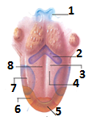
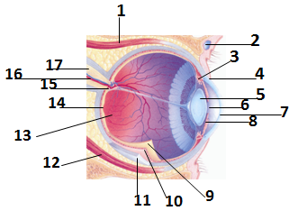
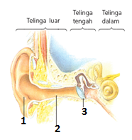
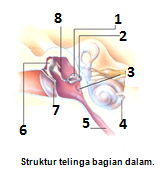
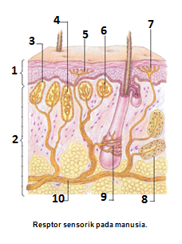
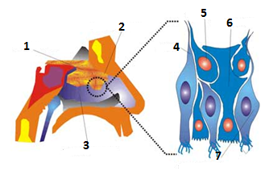

Sistem indra adalah salau satu bagian dari sistem koordinasi yang merupakan penerima rangsangan atau reseptor, sedangkan alat indra adalah reseptor yang peka terhadap rangsangan dan perubahan di sekitarnya.
BAGIAN-BAGIAN INDRA
Indra Pengecap Lidah
Lidah berfungsi sebagai indra pengecap (kemoreseptor cair), resptor lidah adalah papila(tonjolan)yang terletak dipermukaan lidah dan di dalamnya terdapat tunas pengecap yang peka terhadap molekul yang dapat larut dalam air lur.
Struktur lidah
Keterangan gambar :
Epiglotis
Papila serkumvalata
Papila filiformis
Papila fungiformis
Rasa manis
Rasa asin
Rasa asam
Rasa pahit
Macam macam papila pada lidah
Papilla fungiform
Berbentuk seperti jamur, banyak terdapat dibagian dapan dan samping lidah
Papilla filiform
Berbentuk benang halus panjang banyak terdapat dibagian depan lidah, tidak mengandung tunas pengecap tetapi merasakan tekstur makanan
Papilla sirkumvalata
Berbentuk cincin/lingkaran banyak terdapatdi bagian belakang lidah berbentuk huruf V terbalik, kurang peka terhadap rasa
Papilla foliata
Berbantuk lipatan pendek/palu banyak terdapat dibagian samping lidah paling peka terhadap rasa
Penyebab munculnya rasa pada lidah
Rasa manis disebbkan oleh zat kimia organik, seperti glukosa dan asam amino
Rasa asam disebabkan oleh ion H+ suatu zat, seperti asam sitrat (jeruk)
Rasa asin disebabkanoleh ionisasi garam-garaman seperti natrium klorida
Rasa pahit disebabkan oleh perubahan struktur kimia organik yang memiliki rasa manis, rasa pahit ini juga disebabkan oleh suatu zat yang bersifat toxik/racun
Rasa umami disebabkan oleh bumbu dan saus tertentu yang bersifat gurih
Rasa pedas disebabkan oleh zat yang mengiritasi permukaan lidah dan memberi sensasi terbakar atau panas
Jalannya rangsangan rasa ke otak
Molekul makanan dan minuman larut dalam air liur
Rasa masuk ketunas pengecap dan di terima sel-sel reseptor sesuai rasa yang dikenalnya
Reseptor mengirim impuls kesaraf fasial ke lobus parientalis otak untuk diinterprestasikan menjadi rasa.
Gangguan pada indra pengecap
Sariawan lidah: Disebabkan oleh jamur Candida albicans.
Kanker lidah: Disebabkan oleh merokok, konsumsi alkohol dan obat-obatan berlebih.
Fisura lidah: Retak-retak dan lekukan pada lidah yang lebih besar yang mudah menimbulkan rasa perih dan iritasi
Mikroglossi: Ukuran lidah dan papilla yang lebih kecil daripada normal.
Makroglossi: Ukuran lidah dan papilla yang lebih besar daripada normal.
Indra Penglihatan Mata
Mata berfungsi sebagai fotoreseptor,reseptor mata adalah Fovea centralis pada retina yang merupakan lapisan mata terdalam yang peka terhadap cahaya. Struktur mata

Keterangan gambar :
Otot rektus medial
Duktus lakrimalis
Otot siliaris
Kanalis shkelm
Lensa
Pupil
Kornea
Iris
Retina
Koroid
Sklera
Otot rektus lateral
Vitreus chamber
Fovea sentralis
Bintik buta
Pembuluh darah
Saraf optik
bagaian bagian mata
Bola mata terdiri dari tiga lapisan:
Sklera (tunika fibrosa), lapisan terluar yang berwarna putih dan tidak bening.
Koroid (tunika vaskulosa), lapisan tengah yang mengandung pembuluh darah dan pigmen. Pembuluh darah mensuplai nutrisi bagi mata dan pigmen berfungsi menyerap refleksi cahaya pada mata.
Retina (tunika nervosa), lapisan terdalam mata yang banyak mengandung sel-sel fotoreseptor, antara lain:
Sel kerucut (konus), peka terhadap intensitas cahaya tinggi dan warna. Sel konus terdiri dari sel yang peka terhadap warna merah, biru dan hijau. Sel konus menghasilkan iodopsin berupa retinin untuk melihat saat terang.
Sel batang (basil), peka terhadap intensitas cahaya rendah dan tidak peka terhadap warna. Sel basil menghasilkan rhodopsin berupa retinin dan opsin untuk melihat saat gelap. Mata butuh adaptasi untuk memproduksi rhodopsin saat gelap mendadak, sehingga mata mengalami kebutaan sementara
Struktur Bola Mata
Kornea: adalah bagian sklera yang bening dan dilindungi oleh lapisan konjungtiva yang melindungi kornea dari gesekan. Fungsi kornea adalah memfokuskan bayangan yang masuk ke mata.
Aqueous humor: adalah cairan yang dihasilkan badan siliaris dan mengisi bagian depan lensa. Fungsi aqueous humor adalah memberi nutrisi bagi kornea dan lensa, dan membiaskan cahaya yang masuk ke mata.
Kanal Schlemm: adalah pengatur volume aqueous humor dengan mengalirkannya ke pembuluh darah.
Pupil: adalah jalan masuknya cahaya ke mata.
Iris (selaput pelangi): adalah bagian koroid yang mengatur diameter pupil yang mempengaruhi jumlah cahaya masuk. Saat terang, iris akan mempersempit pupil, dan saat gelap, iris akan memperlebar pupil. Otot yang mengatur diameter pupil adalah otot sfingter (sirkuler) dan otot dilator (radial).
Lensa mata: adalah lensa bikonkaf bening dari serat protein. Daya akomodasi adalah kemampuan lensa mata untuk mengubah kecembungan sehingga bayangan jatuh tepat pada retina.
Badan siliaris: adalah kumpulan ligamen suspensor yang berfungsi mengubah cembung-cekung lensa mata dengan kontraksi-relaksasi.
Vitreous humor: adalah cairan yang mengisi bagian belakang lensa mata (isi bola mata). Fungsi vitreous humor adalah menjaga bentuk dan tekanan bola mata.
Makula lutea (bintik kuning): adalah bagian retina berpigmen kuning dan terdapat fovea sentralis yang mengandung sel konus dan sangat peka dan tajam dalam mennerima trnasport cahaya
Bintik buta: adalah bagian yang tidak mengandung sel-sel fotoreseptor, bintik buta adalah daerah awal sarf optik meninggalkan bola mata
Saraf optik: adalah saraf yang mengatur indra penglihatan
Mekanisme kerja indra penglihat
Cahaya berturut-turut masuk pada kornea mata, aqueous humor, pupil, lensa, vitreous humor dan retina
Oleh lensa mata, cahaya dibiaskan dan diatur sehingga jatuh tepat pada bintik kuning. Caranya dengan mencembung dan memipihkan lensa mata
Pada siang hari atau di tempat yang terang, cahaya yang kuat jatuh pada bintik kuning di daerah retina. Cahaya tersebut akan merangsang pigmen iodopsin pada sel konus yang peka terhadap warna. Pigmen iodopsin berperan dalam penglihatan pada siang hari.
Pada malam hari atau di tempat yang agak gelap, cahaya lemah tidak berpengaruh pada pigmen iodopsin, sementara itu pigmen rodopsin tidak memudar sehingga objek benda masih dapat terlihat.
Reseptor dalam retina meneruskan impuls cahaya ke saraf optik dalam susunan saraf kranial
Mekanisme melihat benda
Rangsangan cahaya → kornea → aqueous humor →lensa mata → vitreous humor → retina (fotoreseptor) → saraf → otak → kesan melihat
Gangguan indra penglihatan
Hipermetropi, yaitu bila hanya mampu melihat jelas jarak jauh akibat lensa mata terlalu pipih sehingga bayangan jatuh di belakang retina. Lensa pembantunya adalah lensa cembung
Miopi, yaitu bila hanya mampu melihat jelas jarak dekat, akibat lensa mata terlalu cembung sehingga bayangan jatuh di depan retina. Lensa pembantunya adalah lensa cekung
Presbiopi, yaitu elastisitas lensa mata berkurang karena usia tua. Lensa pembantunya lensa rangkap
Astigmatisme, yaitu kornea mata tidak merata sehingga bayangan menjadi tidak terfokus (kabur). Lensa pembantunya adalah lensa silinder
Buta warna, yaitu tidak dapat mengenal warna merah, hijau dan biru sejak lahir
Katarak, yaitu cacat mata yang disebabkan adanya pengapuran pada lensa mata sehingga daya akomodasi berkurang dan penglihatan menjadi kabur
Trakoma, peradangan lapisan konjungtiva mata yang dapat menyebabkan kebutaan.
Rabun senja, kebutaan karena defisiensi vitamin A.
Buta saraf, Terjadi karena kerusakan retina, saraf optik (II), atau korteks otak yang bertanggung jawab atas penglihatan.
Indra Pendengaran Telinga
Telinga berfungsi sebagai indra pendengaran dan pendeteksi keseimbangan, reseptor telinga adalah organ kortil pada koklea, dan untuk keseimbangan adalah otolith
Struktur bagian telinga

Keterangan gambar :
Daun telinga
Saluran telinga luar
Membran timpani

Keterangan gambar :
Tulang sanggurdi
Tingkap oval
Tingkap bulat
Koklea
Saluran eustachius
Tulang martil
Membran timpani
Tulang landasan
Pembagian telinga
Telinga luar
Terdiri dari daun telinga dan liang telinga yang berfungsi membantu mengkonsentrasikan gelombang suara
Bagian-bagian telinga luar :
Daun telinga, yaitu bagian telinga terluar berupa gelambir yang berguna untuk mengumpulkan dan menyalurkan gelombang bunyi ke dalam telinga
Liang telinga, yaitu saluran sepanjang 2,5 cm menuju membran timpani yang berfungsi membantu mengkonsentrasikan gelombang suara
Rambut, yaitu bulu-bulu halus untuk menahan dan menjerat kotoran yang melewati lubang telinga.
Telinga tengah, terdiri dari :
Membran timpani, yaitu berupa selaput tipis tetapi kuat, berguna untuk menangkap getaran bunyi dan menyalurkannya ke tulang-tulang pendengar
Tulang-tulang pendengaran, antara lain tulang martil (os maleus), tulang landasan (os inkus), tulang sanggurdi (os stapes) yang berfungsi meneruskan vibrasi ke jendela oval
Saluran eustachius yang berfungsi menyeimbangkan tekanan udara antara telinga tengah dan telinga luar
Telinga dalam, terdiri dari :
Jendela oval, berfungsi sebagai penghubung telinga tengah dan telinga dalam
Jendela melingkar, berfungsi sebagai reseptor suara
Koklea (rumah siput), berfungsi sebagai reseptor untuk gerakan kepala
Saluran semisirkuler dan utrikulus, berfungsi sebagai reseptor gravitasi
Membran basiler, berfungsi meneruskan vibrasi
Organ korti, berfungsi sebagai tempat terdapatnya sel reseptor suara berbentuk rambut
Membran tektorial, berfungsi meneruskan vibrasi ke organ korti
Mekanisme kerja telinga
Getaran suara ditangkap oleh daun telinga kemudian berbelok masuk melewati saluran telinga
Getaran suara menggetarkan membran timpani, diteruskan ke tulang-tulang pendengar (martil, landasan, sanggurdi). Di bagian ini getaran suara diperkuat, selanjutnya masuk ke bagian telingan dalam melewati tingkap oval
Getaran suara diteruskan ke rumah siput sehingga menggetarkan cairan dalam saluran vestibular, kanal timpani dan kanal tengah hingga di bagian dasar koklea. Getaran suara sampai di dasar koklea mengakibatkan sel-sel rambut bergetar
Getaran sel-sel rambut menggetarkan membran tektorial dan membran basiler. Getaran akan menekan sel sensorik pada organ korti dan menghasilkan impuls saraf
Impuls akhirnya menuju pusat pendengaran di otak melalui saraf pendengaran
Skema pendengaran
Getaran suara → daun telinga → saluran pendengaran → membran timpani → tulang martil → tulang landasan → tulang sanggurdi → jendela oval → cairan koklea → ujung saraf auditori → otak (lobus temporalis) → persepsi suara
Kelainan pada telinga
Tuli
Tuli konduksi, yaitu gangguan saluran pendengaran karena penyumbatan oleh kotoran, pengapuran pada telinga dan pecahnya membran timpani
Tuli saraf, yaitu gangguan yang terjadi karena organ korti rusak, biasanya terjadi pada orang yang lanjut usia
Labiringitis, yaitu gangguan pada labirin dalam telinga yang disebabkan oleh infeksi, gegar otak dan alergi
Radang telinga, yaitu gangguan pada telinga yang disebabkan karena virus atau bakteri dan sering menyerang anak-anak
Indra Peraba Kulit
Kulit berfungsi sebagai indra peraba, dimana reseptor kulit terdiri dari korpus-korpus pada lapisan epidermis dan dermis yang dapat merasakan berbagai ransangan
Struktur Kulit

Keterangan gambar :
Epidermis
Dermis
Rasa panas
Sentuhan lembut
Sakit (nyeri)
Rasa dingin
Sentuhan lembut
Tekanan
Sentuhan
Sel saraf
Reseptor-reseptor yang terdapat pada kulit
Korpuskula paccini, merupakan ujung saraf perasa tekanan kuat
Ujung saraf sekeliling rambut, merupakan ujung saraf peraba
Korpuskula ruffini, merupakan ujung saraf perasa panas
Ujung saraf krause, merupakan ujung saraf perasa dingin
Korpuskula meissner, merupakan ujung saraf peraba
Lempeng merkel, merupakan ujung saraf perasa sentuhan dan tekanan ringan
Ujung saraf tanpa selaput (telanjang), merupakan perasa sakit
Struktur lapisan kulit
Epidermis (kulit ari), jaringan epitel yang tersusun atas sel kulit hidup dan mati, yang terdiri dari empat lapisan dari atas, yaitu:
Stratum korneum (kulit tanduk), mengalami deskuamasi (pengelupasan) dan keratinisasi (pembentukan zat tanduk), berfungsi melindungi kulit di bawahnya.
Stratum lusidum, lapisan bening dan tipis sebagai pelindung kulit dari sinar UV.
Stratum granulosum, lapisan tempat terdapatnya butir-butir melanin (pigmen kulit).
Stratum germinativum, lapisan tempat pembelahan (proliferasi) sel-sel kulit. Lapisan ini dapat dibagi lagi menjadi stratum spinosum dan stratum basale.
Dermis/korium (kulit jangat), jaringan ikat yang di dalamnya terdapat kapiler darah, sel reseptor kulit, kelenjar keringat, kelenjar minyak, dan akar rambut
.
Hipodermis (lapisan subkutan), jaringan ikat yang di dalamnya terdapat kapiler darah, lapisan lemak, dan jaringan saraf
Gangguan pada kulit
Panu: Disebabkan oleh jamur Tinea versicolor.
Kurap :Disebabkan oleh jamur Microsporum.
Jerawat: Disebabkan oleh bakteri Propionibacterium acnes yang menyebabkan tersumbatnya pori-pori kulit.
Dermatitis.: Adalah peradangan kulit seperti munculnya ruam, rasa gatal dan inflamasi, sebagai respon imun terhadap benda asing dan patogen.
Indra Pencium Hidung
Hidung berfungsi sebagai indra pembau atau pengiduan(kemoreseptor gas), resptor hudung adalah saraf olfaktori yang terletak pada langit-langit rongga hidung yang peka terhadap molekul bau, tiap sel saraf olfaktori bertanggung jawab atas molekul bau yang berbeda sehingga dapat mengenali bau yang berbeda. Indra pencium bekerjasama dengan indra pengecap sebagai kemoreseptor untuk mengenali rasa sekaligus bau.
Struktur hidung

Keterangan gambar :
Saraf olfaktori
Mukosa olfaktori
Lintasan nasal
Akson
Sel dasar
Sel penyangga
Sel reseptor
Silia
Jalanya ransangan berupa bau keotak
Bau masuk kedalam hidung bersama udara inspirasi
Bau diterima oleh sel sel kemoreseptor di rongga hidung
Reseptor mengirim impuls ke saraf olfaktori untuk diinterpretasikan menjadi bau
Gangguan pada indra penciuman
Hiposmia: Penurunan reseptor hidung terhadap sebagian bau.
Parosmia: Kesalahan reseptor hidung dan otak dalam menerjemahkan bau.
Kakosmia: Persepsi abnormal terhadap suatu bau yang tidak enak.
Anosmia: Ketidakmampuan total reseptor hidung menerima bau.
Influenza: Penyakit yang menyebabkan hidung meng- hasilkan banyak lendir yang menghalangi reseptor hidung untuk menerima bau